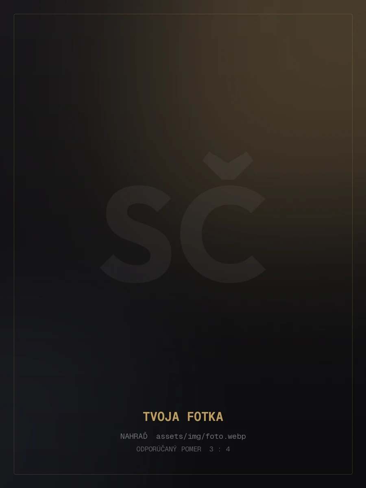

Grafika & dizajn
Vizuálna identita, plagáty a digitálna grafika. Od nápadu po export.
- Photoshop
- Illustrator
- Vektor
Dostupné pre prax & spoluprácu
Fotograf a grafik z Popradu. Zachytávam svetlo, tvar a moment — a premieňam ich na vizuál, ktorý si pamätáš.
Fotím portréty, krajinu, svetlo, detail a momenty.

Vybraná fotografia01 Vybrané práce
Šesť vybraných prác — fotografia, svetlo a detail. Klikni na ktorúkoľvek a otvorí sa celý príbeh.
— Prístup
Fotím to, čo by inak zmizlo.
Svetlo, kompozícia a moment. Nič navyše.
Volám sa Samuel Čižmár, mám 17 rokov a študujem grafiku na Súkromnej strednej odbornej škole v Poprade. K tvorbe som sa dostal cez fotografiu — dnes fotím, upravujem fotky, robím grafiku a učím sa programovať weby.
Baví ma robiť veci poriadne. Keď ma niečo chytí, chcem to pochopiť do hĺbky a dotiahnuť do konca — od prvého nápadu po hotový výsledok.
03 Zručnosti
Nástroje, ktoré používam každý deň — od fotky po hotový web.
Fotenie, kompozícia a úprava. Hľadám svetlo a moment, ktorý stojí za to.
Vizuálna identita, plagáty a digitálna grafika. Od nápadu po export.
Stavba stránok od nuly. HTML, CSS a základy PHP.
04 Vzdelanie
Škola mi dáva základ. Zvyšok si dopĺňam sám — fotením, tvorbou a kódom.
Ul. 29. augusta 4812, 058 01 Poprad
Grafika, dizajn a digitálne médiá. Spracovanie grafiky na počítači a práca s vizuálom.
Fotenie, úprava fotiek, vektorová grafika — Photoshop a Illustrator.
HTML, CSS a PHP. Vlastné stránky a neustále učenie sa nových vecí.
05 Kontakt
Máš nápad, projekt alebo len otázku? Napíš mi — ozvem sa čo najskôr.
Slovensko · dostupný pre prax a spoluprácu
01 / Portrét · 2026
Sem napíš popis projektu — čo to bolo, akú úlohu si mal, aké nástroje a postupy si použil a čo si sa naučil.
02 / Krajina · 2026
Sem napíš popis projektu — čo to bolo, akú úlohu si mal, aké nástroje a postupy si použil a čo si sa naučil.
03 / Detail · 2026
Sem napíš popis projektu — čo to bolo, akú úlohu si mal, aké nástroje a postupy si použil a čo si sa naučil.
04 / Svetlo · 2026
Sem napíš popis projektu — čo to bolo, akú úlohu si mal, aké nástroje a postupy si použil a čo si sa naučil.
05 / Mesto · 2026
Sem napíš popis projektu — čo to bolo, akú úlohu si mal, aké nástroje a postupy si použil a čo si sa naučil.
06 / Séria · 2026
Sem napíš popis projektu — čo to bolo, akú úlohu si mal, aké nástroje a postupy si použil a čo si sa naučil.